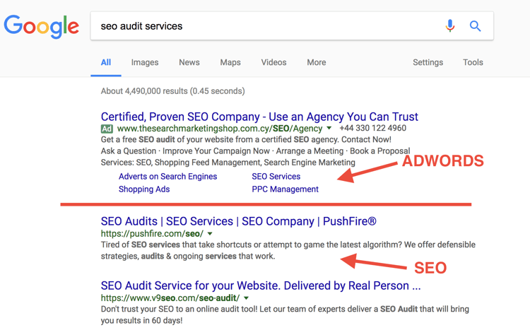

Prof. Virgílio
Possui graduação em Ciência da Computação, mestrado pela Unesp - Universidade Estadual Paulista "Júlio Mesquita Filho", através da Faculdade de Engenharia Elétrica na área de Automação, concluinte do Programa Especial de Formação Pedagógica de docentes para as disciplinas do currículo da educação profissional de nível técnico para adquirir o título de Licenciatura em Informática. Possui experiência na área de desenvolvimento web, design, marketing e gerência de projetos. Leciona como professor concursado na Escola Técnica Estadual de Ilha Solteira - SP (ETEC) lecionando nos cursos de informática em Ilha Solteira - SP.
Conceito
Teoria. Adequação comunicativa em diferentes situações de interação. Planejamento de produção de conteúdo textual. Escrita e edição de conteúdo para Web.
Objetivo
Criar conteúdos textuais para páginas da Internet. Objetivos específicos. Descrever uma abordagem centrada no usuário para a escrita Web e comparar esta abordagem com outras práticas de escrita comuns. Reconhecer e observar métodos e etiqueta de comunicação interpessoal na utilização de email, listas de email, mensagens instantâneas, fóruns, Blogs, Wiki, Feeds, RSS, Chats, podcasts. Desenvolver e trabalhar com personas de usuário simples. Planejar um projeto de escrita simples com a definição do público-alvo e respectivo nível de leitura, descrição dos efeitos primários e secundários esperados, voz e tom adequados, lista de palavras-chave para possível inclusão no conteúdo. Retrabalhar cópia de textos impressos para uso na web. Escrever legendas eficazes para link de texto, texto alternativo, e imagem. Desenvolver marca apropriada para interface e rótulos de navegação. Marcar semanticamente páginas de conteúdo. Rever conteúdos para aumentar a clareza, refinar propósito e assegurar a coerência de voz, tom e estilo.
O que é estratégia de contéudo
É a maneira em que se é melhor gerenciado todo o contéudo, desde a criação até a entrega do mesmo, fazendo com que ele seja mais prático, objetivo e interessante.
Conteúdo: Textos, dados, gráficos, vídeos, áudio, animações,PDF´s, etc.
Estratégia: Utilizar da melhor forma os recursos disponíveis para atingir um objetivo ou meta.
Estratégia de conteúdo abrange:
Criação – Qual é o conteúdo que será criado? Por quê será criado? Como ele será estruturado e encontrado? De onde oconteúdo virá? Quem será o responsável por criá-lo?
Entrega – Como o conteúdo ficará online? Quem são os revisores e aprovadores? Quem irá publicá-lo? Quais ferramentas dão garantia que sua audiência encontrará o conteúdo?
Gerenciamento – O que acontecerá com o conteúdo depois que ele estiver publicado? Qual é o plano para atualizar e arquivar o conteúdo? Como o conteúdo será avaliado?
Uma estratégia de conteúdo deve informar:
• Qual conteúdo é necessário e por quê?
• Como o conteúdo estará estruturado?
• Como os usuários encontrarão o conteúdo?
• Como iremos de hoje até o lançamento?
• O que fazer depois que o conteúdo estiver publicado?
• Como estas recomendações impactarão o negócio?
O que é um Web Writing
A web writing é a prática de escrever conteúdo útil e prático especificamente para ser fornecido online. Isso é muito mais inteligente do que a mídia impressa. Um escritor efetivo da web deve entender o básico sobre experiência do usuário, ser capaz de entender a informação dos documentos da arquitetura da informação, escrever metadados eficientes e gerenciar um inventário de conteúdo em constante mutação.
Halvorson, 2010, pág. 32.

O que é Arquitetura da Informação?
A arquitetura da informação é o desenvolvimento da organização e dos sistemas de navegação para ajudar as pessoas a encontrar e gerenciar informações de forma mais fácil.
Halvorson, 2010, pág. 32
SEO – by Google
A Otimização para Mecanismos de Pesquisa pode muitas vezes se resumir a pequenas modificações em partes do seu site. Quando vistas isoladamente, essas mudanças podem parecer como uma pequena melhoria, mas quando combinadas com outras otimizações, podem representar um impacto significativo na experiência do usuário e no desempenho nos resultados de pesquisa orgânica.
Fonte: Google - Otimização de sites para Mecanismos de Pesquisa (SEO)
O que é outsourcing?
O outsourcing é uma prática empresarial bastantes difundida, pois, se a empresa não possui competência para realizar um tipo específico de serviço, então ela contratauma empresa especializada para fazer aquele serviço.
Terceirizar a criação conteúdo é uma estratégia suicida, pois:
• Ao contratar uma empresa para gerar conteúdo, sua empresa confirma o desprezo pelo conteúdo;
• Geralmente o conteúdo é de baixa qualidade;
• O conteúdo não reflete a marca da empresa;
• O conteúdo raramente satisfará as necessidades do usuário e, principalmente, os objetivos do negócio.
Referência
HALVORSON, K. Estratégia de conteúdo para web. Rio de Janeiro: Alta Books, 2010.